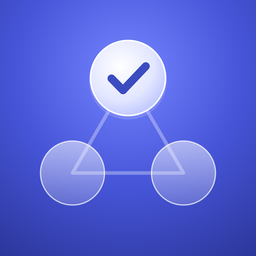

プライバシーポリシー
ミッツ
前川 統（以下「開発者」）は、iPhone・Mac向けアプリ「ミッツ」（以下「本アプリ」）における利用者の情報の取り扱いについて、以下のとおり定めます。
1. 収集する情報
開発者は、本アプリを通じて利用者の個人情報やその他のデータを収集しません。利用者が入力したタスク、タグ、メモなどの内容が、開発者に送信されることはありません。
2. データの保存場所
本アプリのデータは、利用者の端末の中と、利用者自身のiCloud（Appleが提供するプライベートな保存領域）にのみ保存されます。iCloudに保存されたデータは、同じApple IDでサインインしている利用者の端末どうしの同期にだけ使われ、開発者がアクセスすることはできません。iCloudにおけるデータの取り扱いは、Appleのプライバシーポリシーに従います。
3. 解析・広告・トラッキング
本アプリは、利用状況の解析ツール、広告、および利用者を追跡する仕組みを使用していません。
4. 第三者への提供
開発者は利用者のデータを保有しないため、第三者に提供することはありません。
5. データの書き出し
本アプリの「データを書き出す」機能で作成したファイルは、利用者が選んだ場所に保存されます。そのファイルの管理は利用者ご自身で行ってください。
6. データの削除
本アプリ内でタスクやタグを削除すると、端末とiCloudの両方から削除されます。本アプリを削除しても、iCloudに保存されたデータは残ります。iCloudのデータを削除したい場合は、端末の「設定」から［自分の名前］→「iCloud」の保存領域の管理で削除できます。
7. お子さまの利用
本アプリは、年齢を問わずお使いいただけます。前述のとおり、開発者はいかなる利用者の情報も収集しません。
8. 本ポリシーの変更
本ポリシーの内容は、必要に応じて変更することがあります。変更した場合は、このページでお知らせします。
9. お問い合わせ
本ポリシーに関するお問い合わせは、下記までお願いします。
メール：SUPPORT_EMAIL
制定日：2026年10月10日